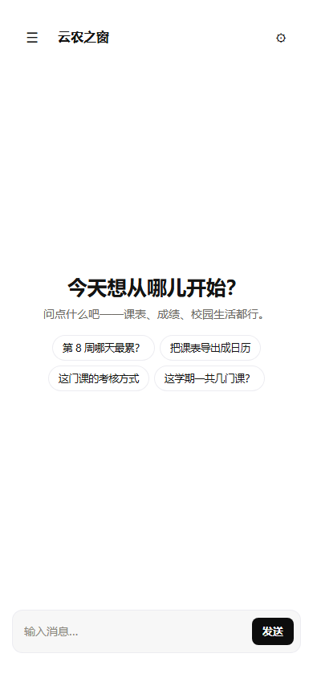
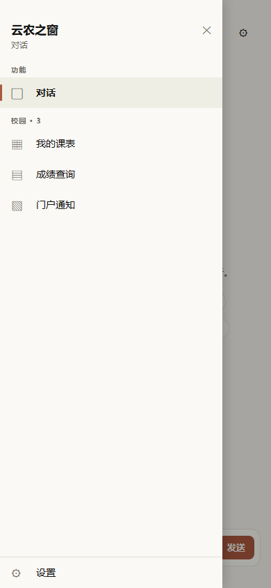

Android 分层导航 · 两态（390 × 844）
手机档：无 rail，内容全宽；点汉堡 → 覆盖层抽屉（320dp，含图标 + 文字 + 选中态）。桌面档不变。

关闭（默认）
极简黑白 · 无 rail，内容左右 padding 16；汉堡在状态行左侧 48×48
打开
极简黑白 · 抽屉 320 + 遮罩 32%；选中项 surfaceAlt 底 + 左侧 3dp 条

打开
书本质感 · 抽屉纸面 #FAF9F5，强调条 #A9583E